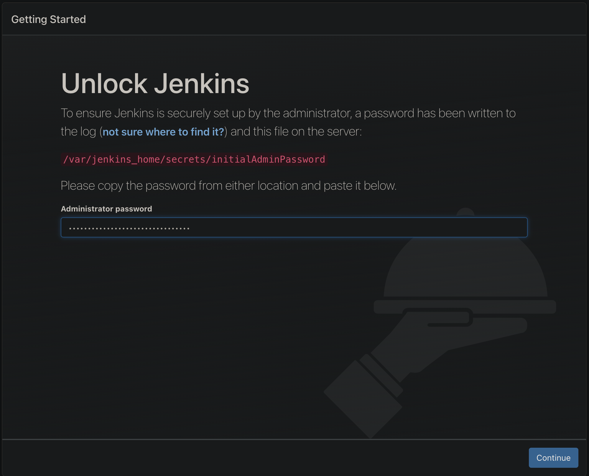
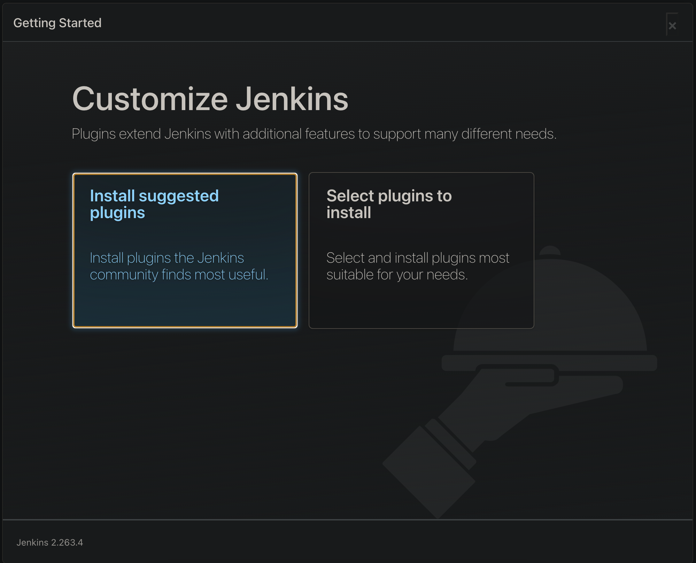
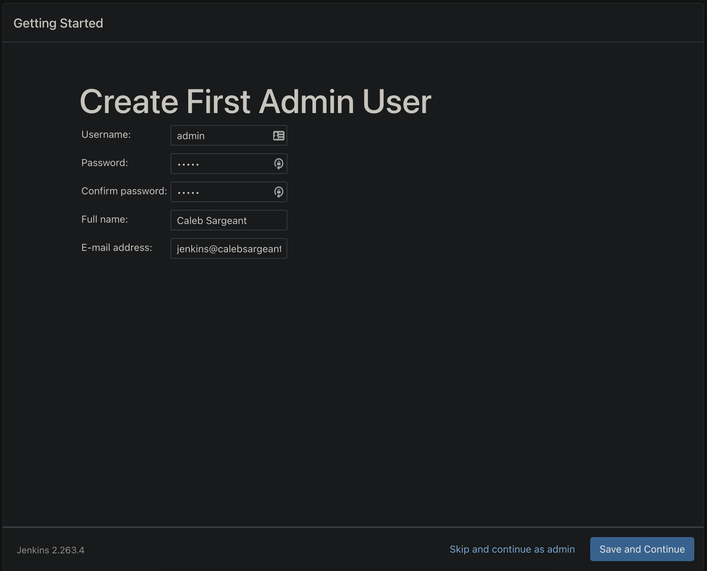
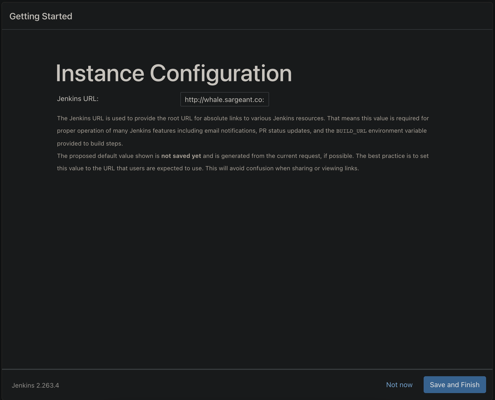
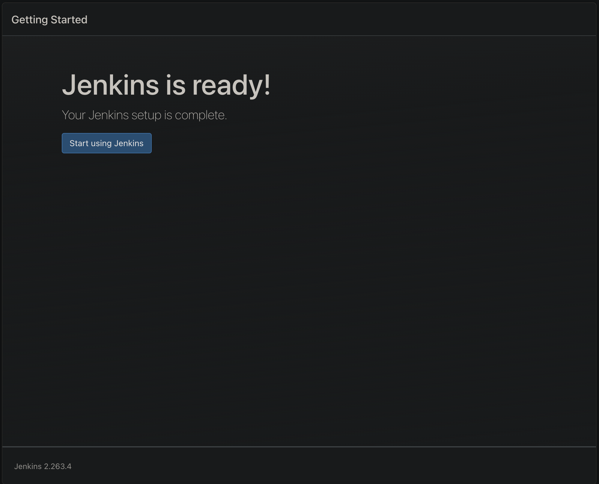

Caleb Sargeant's Docs
Networking
Cisco
Mikrotik
FortiGate
HP Procurve
Juniper
Ubiquiti UniFi
NetDevOps Tool Chest
Computing
Ansible
Bamboo
Cloud
Containerisation
Jenkins
Getting Started
Setting up Jenkins
Setup Wizard
Building Applications with Freestyle Jobs
Automating Jobs Configured with Code
Colocating Jobs and Source Code with Jenkinsfile
Plugins
Linux
Terraform
Microsoft
Programming
Bash
Python
Other
API
General
iPerf3
Caleb Sargeant's Docs
»
Jenkins
»
Getting Started
»
Setting up Jenkins
View page source
Setting up Jenkins
Setup Wizard
    